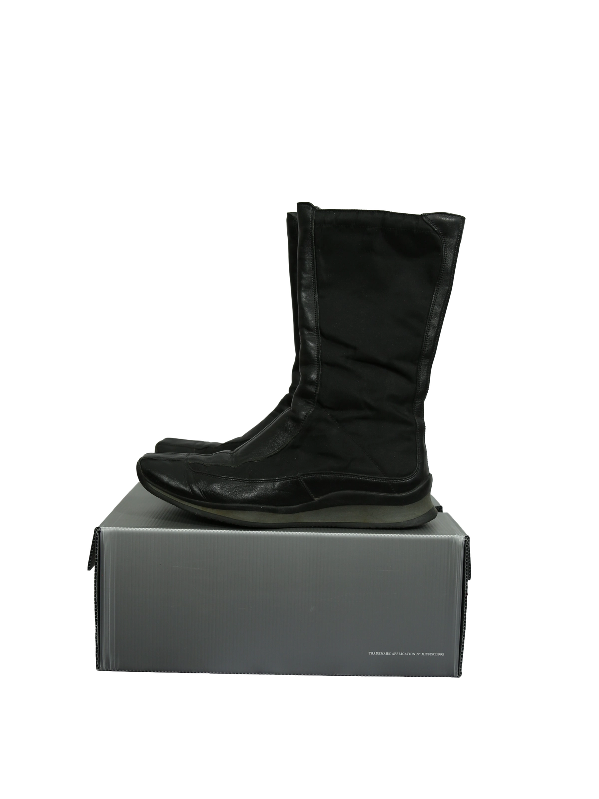

1 / 12Aus dem kuratierten Archiv von Disorder119. Diese Prada Stiefel verbinden funktionale Zurückhaltung mit einer klaren, sportiven Linienführung. Das Design zeigt einen hybriden Charakter aus technischem Textil und glattem Leder, wodurch eine ruhige, moderne Silhouette entsteht. Der mittelhohe Schaft wirkt reduziert und schlank, während die leicht gepolsterte Konstruktion für Struktur und Komfort sorgt. Die markentypische rote Linie in der Laufsohle setzt einen subtilen Kontrast und verweist dezent auf die DNA des Hauses. Die Form bleibt zeitlos, tragbar und vielseitig kombinierbar – zwischen urbanem Minimalismus und avantgardistischer Eleganz. Details: Marke: Prada Farbe: Schwarz Größe: 39 Passform: Fällt regulär aus Verschluss: Reißverschluss Material: Leder und Textil Herstellungsland: Nicht angegeben Fotografie & Passform: Das Kleidungsstück wurde auf unserer Standard-Schneiderpuppe fotografiert, die wir zur konsistenten Darstellung aller Kleidungsstücke verwenden. Maße der Schneiderpuppe: Brustumfang 89 cm Taillenumfang 66 cm Hüftumfang 89 cm Schulterbreite 38 cm Diese Maße dienen ausschließlich der visuellen Einordnung und werden nicht als Artikelmaße bezeichnet. Zustand: Gebrauchter Zustand mit sichtbaren Tragespuren an Sohle und Obermaterial. Rechtliche Hinweise: Verkauf als gebrauchtes Kleidungsstück. Die Beschreibung erfolgt nach bestem Wissen und Gewissen. Farbnuancen und Oberflächenwirkungen können aufgrund von Lichtverhältnissen bei der Fotografie sowie unterschiedlicher Bildschirmdarstellungen leicht vom Original abweichen. Disorder119 steht für sorgfältig kuratierte Designerstücke mit Fokus auf Authentizität, Qualität und zeitlose Relevanz.
Disorder119 · Kuratiertes Archiv für Designer-, Vintage- und Contemporary-Mode. Jedes Stück wird einzeln ausgewählt, fotografiert und beschrieben.